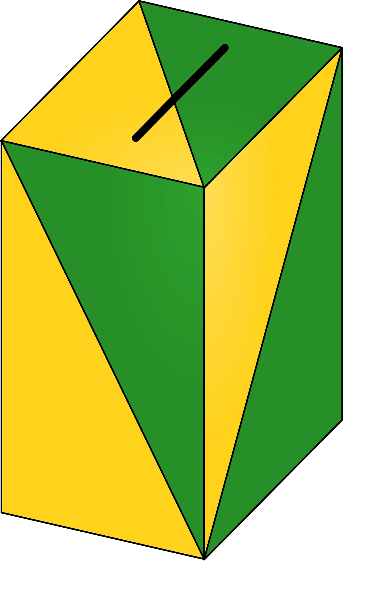

선거에서 AI 딥페이크가 위험한 이유는 기술이 신기해서가 아닙니다. 유권자가 판단해야 할 짧은 시간에 후보의 말과 행동처럼 보이는 콘텐츠가 빠르게 퍼질 수 있기 때문입니다. 합성 음성, 조작 영상, 가짜 이미지가 선거 막판에 유통되면 정정이 사실을 따라잡기 어렵습니다.
정치 분야의 해법은 단순한 전면 금지로 끝나기 어렵습니다. 풍자, 패러디, 편집 영상, 사실 보도, 악의적 합성물을 어떻게 구분할지가 곧 표현의 자유와 선거 공정성의 경계가 됩니다. 그래서 많은 지역에서 합성 표시 의무, 기간 제한, 플랫폼 신고 절차, 후보자의 신속 대응 권리를 함께 논의합니다.
유권자에게 필요한 것은 “AI를 쓰면 모두 나쁘다”는 말이 아닙니다. 어떤 콘텐츠가 합성인지 알 수 있어야 하고, 출처가 분명해야 하며, 허위임이 드러났을 때 선거일 전에 정정이 널리 도달해야 합니다. 딥페이크 규제의 핵심은 기술 공포가 아니라 검증 가능한 정치 정보 환경입니다.
표시는 가장 낮은 안전장치입니다

합성 표시 의무는 딥페이크 대응의 출발점입니다. 유권자가 영상을 보자마자 실제 촬영인지 AI 합성인지 알 수 있다면 오해의 여지를 줄일 수 있습니다. 표시가 작거나 애매하면 효과는 떨어집니다. 특히 짧은 영상과 세로형 콘텐츠에서는 첫 화면과 음성 안내까지 함께 고려해야 합니다.
다만 표시만으로 충분하지는 않습니다. 악의적인 유포자는 표시를 지우거나, 원본처럼 보이도록 다시 편집할 수 있습니다. 그래서 플랫폼의 재업로드 탐지, 캠페인 계정의 책임, 선거관리기관의 빠른 공지 체계가 같이 필요합니다. 표시는 문구가 아니라 유통 구조 안에서 작동해야 합니다.
막판 유포가 가장 위험합니다
선거 딥페이크의 피해는 시점에 따라 달라집니다. 투표 한 달 전의 허위 영상은 반박과 보도가 따라갈 시간이 있지만, 투표 전날 밤에 퍼진 영상은 정정이 도달하기 전에 선택을 흔들 수 있습니다. 그래서 일부 규제는 선거 직전 일정 기간을 더 엄격하게 다룹니다.
막판 유포를 줄이려면 신고 절차가 느려서는 안 됩니다. 후보자, 언론, 플랫폼, 선거관리기관이 서로 다른 창구에서 따로 움직이면 대응 시간이 길어집니다. 빠른 판단과 임시 표시, 정정 노출, 원본 링크 제공이 함께 돌아가야 합니다. 선거에서는 사후 처벌보다 사전 혼란을 줄이는 일이 더 중요합니다.
플랫폼 책임은 삭제만이 아닙니다
플랫폼의 역할을 삭제로만 이해하면 논의가 좁아집니다. 어떤 콘텐츠는 명백한 허위라서 내려야 하지만, 어떤 콘텐츠는 풍자나 비판일 수 있습니다. 이때 플랫폼은 삭제 여부와 별개로 합성 표시, 출처 정보, 공유 제한, 추천 알고리즘 조정, 신고 이력 공개 같은 중간 조치를 검토할 수 있습니다.
정치 광고와 일반 게시물도 구분해야 합니다. 돈을 내고 퍼뜨리는 선거 광고에는 더 높은 투명성을 요구할 수 있습니다. 광고주, 결제 주체, 타깃팅 기준, 합성 여부가 공개되면 유권자는 콘텐츠의 목적을 더 잘 이해합니다. 정치 커뮤니케이션의 신뢰는 무엇을 말했는지뿐 아니라 누가 어떤 방식으로 퍼뜨렸는지에서 나옵니다.
유권자 검증 경로가 필요합니다
딥페이크 대응은 전문가만의 일이 아닙니다. 유권자가 의심스러운 영상을 봤을 때 확인할 수 있는 공식 경로가 있어야 합니다. 선거관리기관의 알림, 언론의 팩트체크, 후보 캠프의 원본 공개, 플랫폼의 표시가 같은 방향을 가리켜야 혼란이 줄어듭니다.
앞으로 중요한 기준은 처벌 수위보다 실행 속도입니다. 합성물이 발견된 뒤 몇 시간 안에 표시가 붙는지, 정정 콘텐츠가 원본만큼 보이는지, 반복 유포 계정에 어떤 조치가 이뤄지는지 확인해야 합니다. AI 선거 규제는 기술을 금지하는 법이 아니라 유권자가 판단할 시간을 지켜 주는 제도여야 합니다.
국내 선거에서도 이 문제는 먼 나라 이야기가 아닙니다. 짧은 영상 플랫폼과 메신저 단체방을 통해 합성 콘텐츠가 빠르게 퍼질 수 있기 때문입니다. 공식 광고가 아니더라도 지지자 계정이나 익명 계정이 만든 영상이 여론에 영향을 줄 수 있습니다.
정당과 후보 캠프도 내부 기준을 가져야 합니다. 상대 후보를 비판하더라도 합성 음성이나 조작 이미지를 어디까지 쓸 수 있는지 정해 두어야 합니다. 캠프가 먼저 투명한 기준을 공개하면 법적 리스크뿐 아니라 유권자의 불신도 줄일 수 있습니다.
언론의 역할도 중요합니다. 딥페이크 의혹이 생겼을 때 자극적인 장면을 반복 재생하면 오히려 허위 정보가 더 널리 퍼질 수 있습니다. 보도는 원본 확인, 맥락 설명, 검증 결과를 중심으로 해야 하며, 불필요한 확산을 줄이는 편집 판단이 필요합니다.
유권자 교육은 기술 탐지법만으로 충분하지 않습니다. 출처가 불분명한 영상, 지나치게 감정적인 문구, 공식 채널과 다른 발언, 선거 막판에 갑자기 퍼지는 자료를 의심하는 습관이 필요합니다. 민주주의의 방어선은 법과 플랫폼뿐 아니라 유권자의 검증 습관에도 놓여 있습니다.
합성 기술의 품질이 높아질수록 단순 육안 판별은 어려워집니다. 예전에는 어색한 입 모양이나 이상한 손가락이 단서였지만, 이제는 짧은 영상과 음성만으로는 구별하기 힘든 경우가 늘고 있습니다. 그래서 탐지 도구만 믿는 방식은 위험합니다. 출처 확인, 원본 기록, 공식 반박 채널이 함께 있어야 합니다.
선거 이후의 책임도 설계해야 합니다. 허위 합성물이 당락에 영향을 미쳤다는 의혹이 제기되면 사후 소송과 정치적 불신이 길게 이어질 수 있습니다. 선거 기간 중 빠르게 정정하고, 유포 경로를 기록하며, 책임 주체를 확인하는 절차가 있어야 결과에 대한 승복 가능성도 높아집니다. 딥페이크 대응은 선거 당일을 넘어 민주주의의 사후 신뢰까지 다룹니다.
기술 기업의 자율 규범도 법과 함께 봐야 합니다. 워터마크, 콘텐츠 출처 표준, 합성 탐지 API가 개발되고 있지만 모든 플랫폼이 같은 속도로 채택하는 것은 아닙니다. 규칙이 흩어지면 유포자는 가장 느슨한 플랫폼을 이용합니다. 선거 정보의 신뢰를 지키려면 기술 표준과 법적 책임, 플랫폼 운영정책이 서로 맞물려야 합니다.
관련 영상
유럽연합도 머스크 AI 그록 딥페이크 생성 조사 착수
AI 딥페이크는 선거의 모든 문제를 새로 만든 것이 아니라, 오래된 허위 정보 문제를 더 빠르고 그럴듯하게 만들었습니다. 그래서 답도 기술 하나로 끝나지 않습니다. 표시, 유통 책임, 신속 정정, 공식 검증 경로가 함께 움직일 때 유권자는 합성된 장면보다 실제 선택 기준에 더 가까이 갈 수 있습니다.